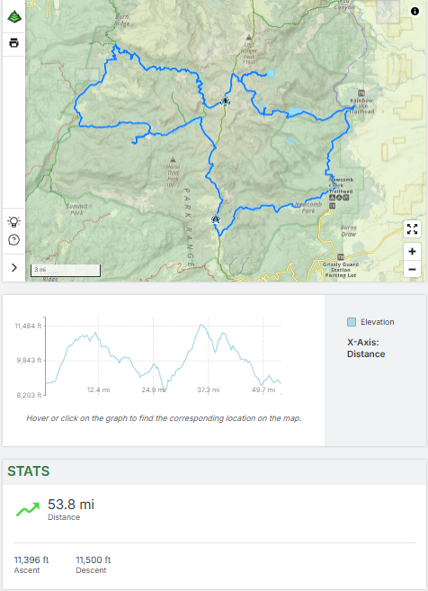

We're headed to Steamboat Springs, Colorado! This year we'll be out in the Zirkel Wilderness of the Park Range in the Rocky Mountains.
We'll be starting off at the Newcomb Creek Trailhead (also known as Summit Lake Trailhead) about an hour North-East of Steamboat Springs. This route heads in a clockwise direction hitting as many lakes and beauty as this area has to offer. We'll hike for 8 days and 7 nights, really getting into the hills, even spending one whole day off-trail! 5 of the seven nights will be at lakes, something not all too common in the Rockies. You can access the route from the Gaia link here.
We're filling up the week to spend as much time in the woods as we can! Because of this, we're hoping people can fly into the Colorado Springs Airport (COS) on Friday, July 18th. We'll head out Saturday morning driving the ~3.5 hours to the trailhead, hike in the first ~4.5 miles, and finish our day at Round Mountain Lake. We'll be hiking everyday between lakes and along creeks until we hike out on Saturday, July 26th. We'll drive back to Colorado Springs that evening for showers at Tyler's house, then everyone can fly out Sunday to return home.
As you all know, we are super excited for this year's trip, so we've been planning away. While we will take care of everything that we can, there are a few tasks that you will have to do yourself. When we say you should do this "Right Now", we mean it should be done well in advance of the trip. Of course if you have any questions that we haven't already answered, ask! (But be prepared, because we love talking about the trip.)
The first and main thing we can not do for you is getting the plane tickets out to Colorado. The sooner you get them, the better deals you should be able to find. If the dates above don't work perfetly for your schedule let us know. You're welcome to fly out to Colroado early or stay a little later. If you can only make part of the week, we may be able to arrange some rides depending on others' needs as well.
From there, the only other thing you'll need to do is let us know if you're planning on coming so we can plan out the rest of our trip! Hope to hear from you all soon!
Look at your personal hiking gear (boots, socks, clothes, hats, etc.). The type of stuff you could use on a normal day hike. You will most likely want decent equipment to make your life easier and more comfortable on the trail. This is definitely something to ask about, because there are things that you can take shortcuts with, and things you cannot. If backpacking is becoming a regular part of your life and you don't have your own equipment, you may want to consider getting some. If you are in this position, we are more than happy to talk to you about which equipment you should consider (usually backpack, sleeping bag, and bear can), and to lend you advice about that equipment. We love answering questions. If you do not currently have backpacking gear (like a backpack), reach out to us. We may have some extra gear that we could loan out for the trip, or we can direct you to the best options for renting equipment.
We generally eat glorious freeze-dried food for our dinners since they are incredibly calorie dense in terms of weight and volume. It is up to you whether you would like to do this. Sometimes we organize into food groups to share meals. If you would like to be in a food group, let us know. Make sure you think about each meal of the day, and snacks. There is nothing worse than running out of food on the trail. Food you bring should be something which will last the trip without going bad. Besides standard junk food, and nuts, consider tortillas, hot sauce, cheese and fruit with a peel. After particularly grueling days, we have a tradition of making elaborate (and sometimes strange) quesadillas, so think about bringing quesadilla supplies. You can see a sample “Grocery List” at the end of this page. As with anything else, do not hesitate to reach out to us with any questions. Feel free to generically ask us for advice, but prepare yourself for an unnecessarily long and enthusiastic answer.
We'll be handling logistics from once you all land at the airport until you need to be dropped off at the end of the trip. This includes these airport pick-ups and drop-offs, trasport to and from the trailhead, and any other stops in between, like a grocery store run. So from your end, you need to focus on getting to and from the Colorado Springs Ariport on the days stated above.
Like I said, we love planning, so we will plan and bring as much as we can to make your trip easier and better! This is mostly here to tell you what will be taken care of for you.
This is what allows us to camp in nature for the week. They are very chill in this area, so there are no quotas that we will have to contend with this year! That being said, we will still let the Forest Service know how many of us will be enjoying the outdoors that week, so please let us know if you can make it.
Obviously, you need to be safe, that's the best way to have fun. We carry first-aid kits with us. These include the basics like bandages, anti-inflammatory medication, disinfectants, and more. In case of an emergency we carry a satellite beacon which we can use to radio for help. In the unlikely case that we use this, it will send off a signal to the nearest emergency responders who will come as quickly as possible. As an extra bonus, we can also send a prerecorded message to a set list of contacts that we are ok. Let us know if you want an email to be added to this list. Being prepared to respond to an emergency does not mean we want to deal with one. To that end, we have some simple rules that we go over at the beginning of our trip and expect everyone to follow so we can all enjoy a great trip together. If you have specific medical issues like allergies, make sure you prepare accordingly and let us know about anything we should be aware of.
If we haven't stressed it enough, we want to talk to you about the trip! There's no way we can answer all your questions and fully prepare you for the trip in a welcome letter. We're looking forward to talking with everyone as the trip gets closer. We're gonna have a great time, so let's get excited about it!
Giving the utmost respect to the mountains, it's important to acknowledge the difficulties that come with traveling on foot through them. We will be above 9000ft in elevation for the majority of the trip, hiking about 8 miles a day with packs. All of you are definitely capable of doing this, but being in shape will increase the amount of fun you will have. We would say that if you are able to comfortably do a 10 mile hike, you will have no issues on the trip. To reiterate, this is nothing to shy away from, everyone can do this, we just want everyone to have as much fun as possible.
Backpacking is definitely a cheap vacation when compared to other alternatives, but nothing comes without some cost. Here's a breakdown of the cost with some estimates to give you an idea of what to expect. (Keep in mind, these are estimates and costs can vary.)
| Item | Cost |
|---|---|
| Airfare | $450 |
| Permit | $10 |
| Dinners* | $50 |
| Gas | $50 |
| Breakfast/Lunch/Snacks* | $70 |
| GPS Beacon | $20 |
| Food while Travelling* | $40 |
| Bear Can Rental** | $25 |
| Backpack Rental** | $64 |
| Sleeping Bag** | $45 |
| Total Without Rental*** | $690 |
| Total With Rental*** | $824 |
* These items will be bought personally as opposed to in a group and paying it back ** May not be necessary, talk to us before renting *** This does not include any personal equipment that you may need (non-recurring costs)